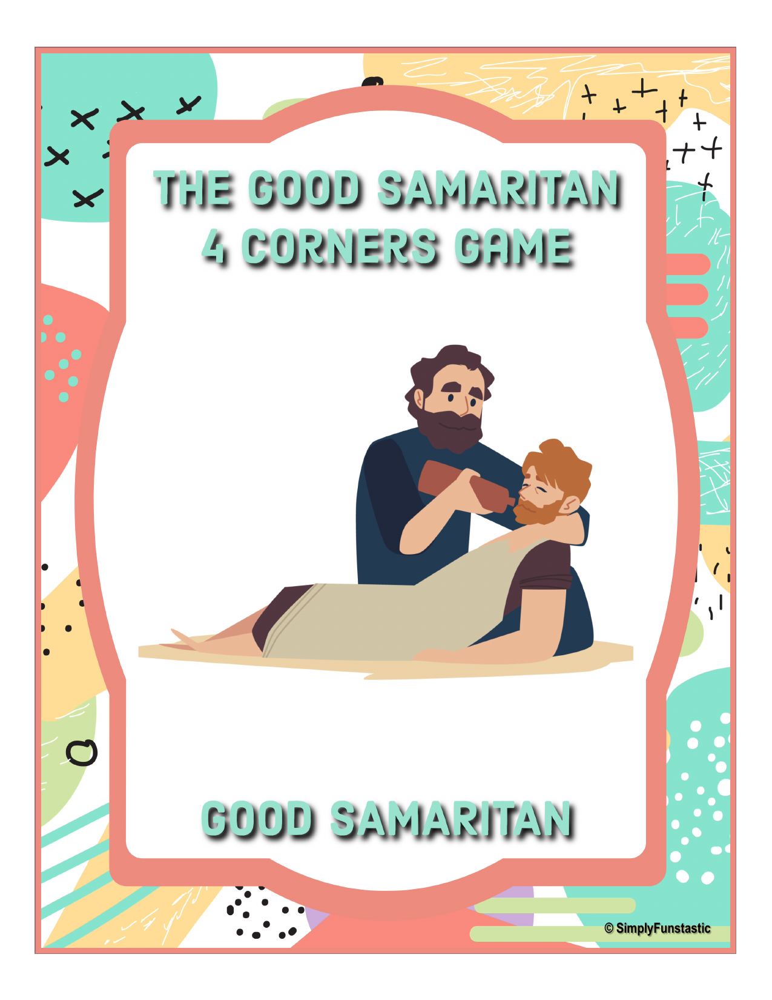
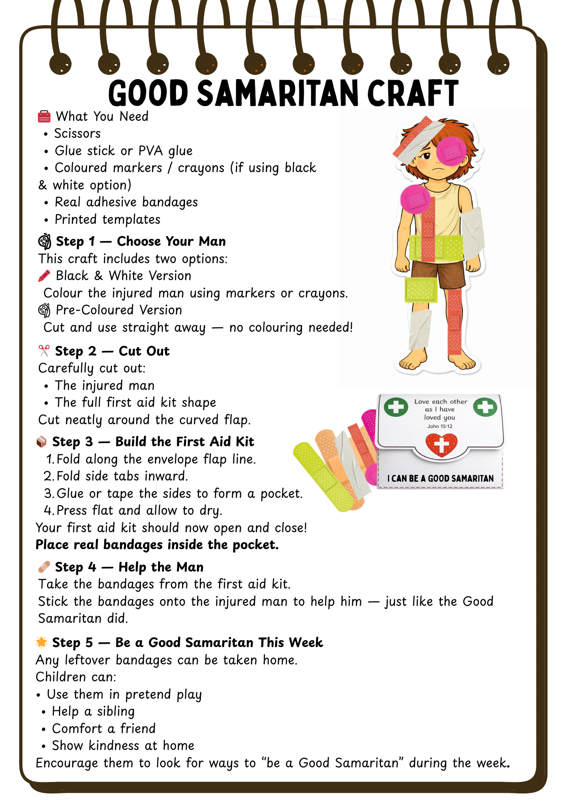
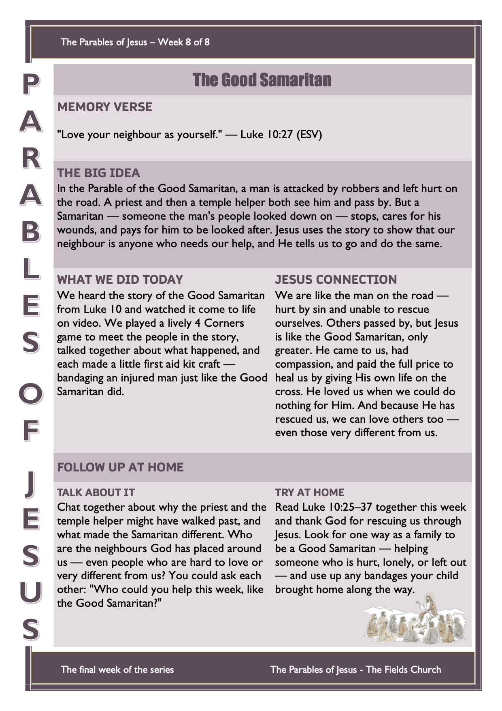

Get the children thinking about kindness and helping before the story begins.
A fun music-and-movement game to get everyone up and moving, and to meet the people in today’s story before we watch it.
How to Play
Hang four of the character posters — one in each corner of the room. Play some upbeat music: the children dance and move around (add an action like “pretend to ride a donkey” or “bow down” for extra fun). When the music stops, everyone runs to a corner and must stay there. The host draws a calling card and shows it — whoever is standing at that corner is out and sits down at the side. If the switch corners card comes up, everyone must move to a new corner before the host draws again. Keep going until one child is left — they’re the winner.
Printable Game Pack
Two files: the posters and calling cards, and the how-to-play instructions.

Bible passage: Luke 10:25–37
Watch the video together, then take the online quiz to see what the children remember.
▶︎ Open the Video on YouTubeThe Story in Brief
A teacher of the law asked Jesus, “Who is my neighbour?” So Jesus told a story. A man was travelling down a lonely road when robbers attacked him, took everything he had, beat him, and left him half dead. A priest came along, saw him, and crossed to the other side of the road. Then a Levite, a helper from the temple, did exactly the same. But then a Samaritan came by — someone the man’s people usually looked down on. When he saw the hurt man, he felt sorry for him. He bandaged his wounds, put him on his own donkey, took him to an inn, and paid for him to be looked after. Jesus asked, “Which of the three was a neighbour to the man?” The teacher said, “The one who showed him mercy.” Jesus said, “Go and do the same.”
Jesus Connection: We are a bit like the man on the road — hurt by sin and unable to rescue ourselves. Others passed us by, but Jesus is like the Good Samaritan, only greater. He came to us, felt compassion for us, and paid the full price to heal us by giving His own life on the cross. He loved us when we could do nothing for Him. And because He has loved and rescued us, we can love others too — even people who are very different from us.
🙏 Prayer
Father, thank You for loving us when we were hurt and helpless, and for sending Jesus to rescue us. Help us to notice the people around us who need help, and to stop and love them like the Good Samaritan did — even when it is hard or costs us something. Make us kind and brave to love our neighbours. Amen.
Children make an injured man and a fold-up first aid kit filled with real bandages, then “help” him by sticking the bandages on — just like the Good Samaritan did.
Before the Session
- Print one craft set per child. Use the full-colour injured man, or the black-and-white version for children to colour.
- Print the first aid kit template (one per child).
- For younger children: print and cut out the injured man and the first aid kit ahead of time, so they can go straight to building and helping.
- Have real adhesive bandages ready to place inside each kit.
Materials
- Printed templates — injured man and first aid kit (one set per child)
- Scissors (or pre-cut pieces for younger children)
- Glue stick or tape
- Coloured markers or crayons (only if using the black-and-white man)
- Real adhesive bandages
Steps
- Choose your man — colour the black-and-white one, or use the pre-coloured version. (Younger children start with their pre-cut pieces.)
- Cut out the injured man and the first aid kit shape, cutting neatly around the curved flap.
- Build the kit: fold along the flap line, fold the side tabs inward, and glue the sides to make a pocket. Press flat and let it dry, then pop real bandages inside.
- Help the man: take bandages from the kit and stick them onto the injured man, just like the Good Samaritan did.
Printable Craft
One file: the instructions, both injured-man versions (colour and black-and-white), and the first aid kit template.

Print one copy per child to send home after the session.
